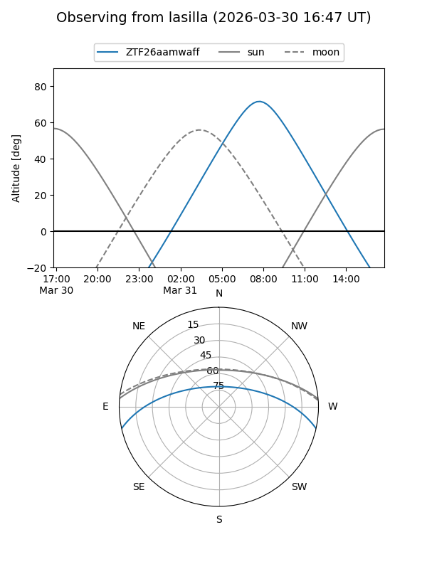
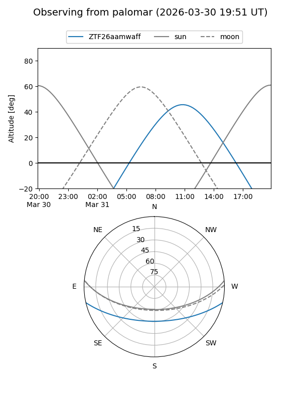
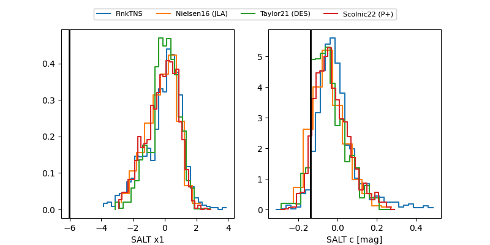

ZTF26aamwaff
Target ZTF26aamwaff at 2026-03-30 14:57
Aliases and brokers:
FINK: link
Lasair: link
ALeRCE: link
alt names
ZTF26aamwaff (ztf,fink_ztf)
Coordinates:
equatorial (ra, dec) = 233.3681,-10.86823
equatorial (HMS+DMS) = 15:33:28.35,-10:52:05.62
galactic (l, b) = (354.3847,+35.34874)
Flags:
Photometry:
last atlaso=nan, ztfg=20.36, ztfr=20.10
1 atlaso, 3 ztfg, 5 ztfr detections
Lightcurve
Visibility


Additional plots
